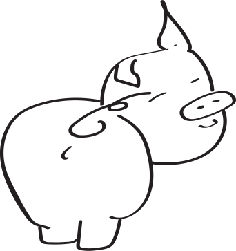
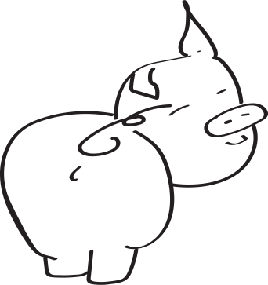

ONZE BEZIELING
Voor ons is “dierwaardigheid” de doorslaggevende maatstaf in ons doen en laten.
Geen enkel dier hoort in een kooi te zitten maar helaas is dit in de meeste asielen de enige manier om het dier alsnog een kans te bieden op een betere toekomst. Als dit een tijdelijke tussenoplossing van korte duur is, is dit voor een jong en gezond dier vaak nog niet te dramatisch. Voor een ziek, gehandicapt of ouder dier kan zo’n opsluiting zijn of haar dood betekenen. Vooral bij poezen is stress een niet te onderschatten factor die al te vaak tot ernstige ziekte leidt met mogelijke dood tot gevolg. Meestal zijn het tevens die dieren die langer zullen moeten wachten op een nieuwe thuis waardoor de kans op een triest einde toeneemt.
Het is net die huiselijke sfeer die voor senioren en dieren met beperkingen zo belangrijk is. Een ander voordeel is dat we snel problemen kunnen vast stellen gezien wij tussen hen leven. Een verandering in gedrag of medische toestand is snel opgemerkt zodat we dadelijk het nodige kunnen doen om erger te voorkomen.
De dieren leven bij ons vrij binnen een omsloten territorium. De tuin is omheind met een hoge omheining waarop een schuine draad werd bevestigd die onze spinnende viervoeters binnen houdt. Binnen dat terrein hebben ze verschillende buitenverblijven die voor hen ingericht zijn en die ’s winters ook verwarmd worden. Deze worden vooral benut door de angstigere dieren die op hun privacy gesteld zijn terwijl de sociale eerder ons gezelschap opzoeken en zich neervlijen in de zonneranda of op een andere knusse plek in huis.
Elk dier krijgt alle verzorging die noodzakelijk is om op te krikken, te genezen of te genieten van zijn of haar oude dag. Daarbij worden kosten noch moeite bespaard. Zolang het dier een dierwaardig leventje kan leiden blijven we helpen. Vanaf het ogenblik dat het in plaats van genieten afzien wordt voor het beestje en geen hulp kan nog baten dan zullen we eveneens onze verantwoordelijkheid nemen en helpen door hem of haar in alle rust (en liefst thuis) te laten inslapen.